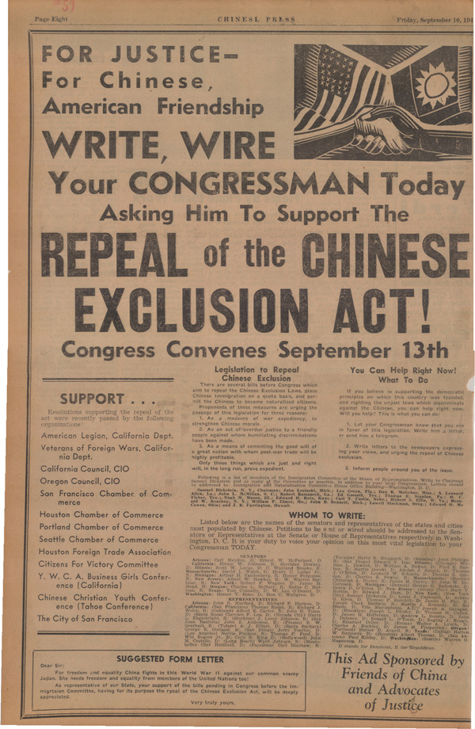
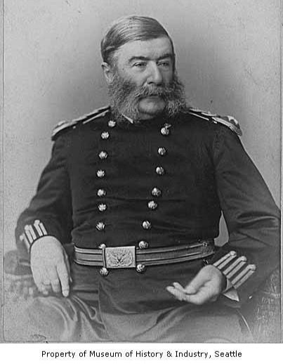
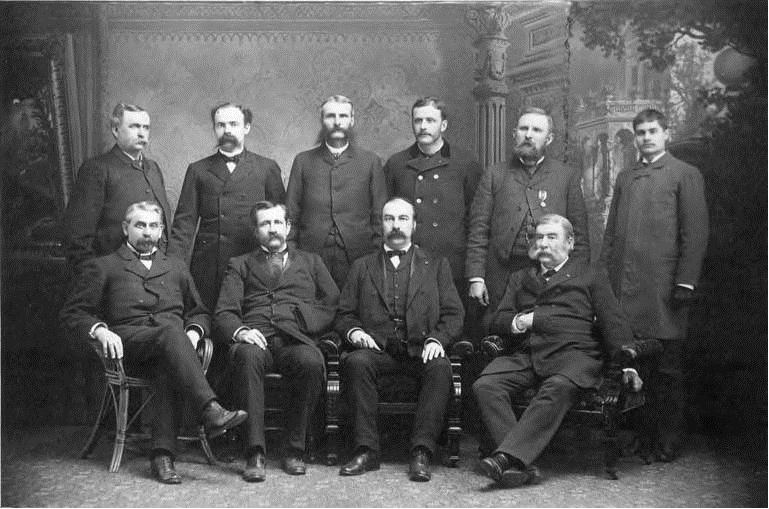

Resistance
Despite the intense discrimination faced by the Chinese, they continuously fought back, refusing to back down, aware of how unfair their situation was. Some responded to exclusion by keeping transnational households alive, some used the court's justice system to fight for their rights, and others used protests.
Chinese immigrants challenged the exclusion laws through the judicial system, being very successful at overturning individual denials to immigration but unsuccessful at challenging the exclusion itself. One example is Fong Yue Ting v. United States in 1893, where Ting successfully convinced the Supreme Court that the evidence for his deportation was insufficient. Another notable case is United States v. Wong Kim Ark in 1898, in which Ark was initially denied re-entry after a trip to China. The Supreme Court would rule in his favor, stating that anyone born in the United States, regardless of their parents' nationality, was a U.S. citizen.
They also utilized relationships with white allies as another way to resist exclusion and discrimination. Despite the widespread anti-Chinese sentiment, there were still white Americans who were sympathetic to the Chinese. For example, Granville O. Haller, a prominent military officer and businessman in Seattle, was an ally of the Chinese in his community. He and his family actively defended and protected the Chinese, contributing to their cause of resistance during the Seattle Riots. Another was Governor Watson C. Squire, who was the territorial governor of Washington during the Seattle Riots. After witnessing anti-Chinese mobs forcefully removing the Chinese, he declared martial law to restore order and provided protection to the Chinese. He also granted Chinese immigrants passage to San Francisco after deeming Seattle too dangerous for them to stay.


